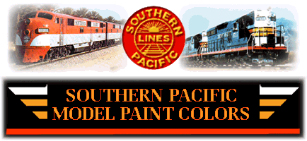

SP colors - 97-07-31


Paint Manufacturer Abbreviations:
MF = ModelFlex AF = AccuFlex, AP = Accu+Paint, FL = Floquill, PS= Polly Scale
GS = Gunze-Sangyo, MM = Model Masters, RU = Rustoleum, TA = Tamiya
'Drift No.' = the 'Bowles Color Drift System'
'Duco or Duluxe No.' = the Dupont Duco-Duluxe paint matching system © Dupont, Inc.
'Pantone No.' = the Pantone Matching System (PMS) © Pantone, Inc.
F-P-5 = the SP Car Department circular # F-P-5, revised 19 MAR 59.
WPM = "Western Prototype Modeler"
RMC = "Railroad Model Craftsman"
Bill Kelly provided most of the SP names, drift numbers, and Duluxe nembers.
Tony Thompson provided the Pantone numbers.
The information at this site has been compiled from posts to the sp-list hosted
by Richard Percy. To keep track of all the information that was being presented,
and to put it into some sense of order, I proposed to put the information on a
web page for everyone to use. As additional information comes up, I will add to
these pages.
The information also contains a portion of a long list of
colors by Bill Havrilla, who had posted it to Compuserve in 1990. It is
still available on John
Shaw's web site. I extracted only the SP portion of the list for use here.
I added to my copy of this long list whenever I found paint formulas in magazine
articles (which is how Bill came up with his list), so some of the information
may be from other sources. I have no guarantee that these schemes were not
simply early attempts at matching the colors, and they may be off or replaced by
others. I included them in case they are good mixes, and if, for example, you
run out of SP Daylight Red at a crucial time, you may be able to get close with
one of these other mixes.
At the time, Floquil was (if I recall) the most used or referenced paint, so
many of the references are to their numbers. More demand is being made to use
water based paints due to environmental concerns. I have mainly used Polly-S
paint and am now using Accu-Flex and Model-Flex paints. I plan to eventually
have the corresponding numbers for Accu+Paint, Accu-Flex and Model-Flex on the
page (these still get me confused), and Scalecoat too, if that is the only paint
that matches.
The information contained in these listings is compiled for your private use.
Formulas listed are copyrighted by the owners as referenced.
Duplication is expressly prohibited, except for private use.
If you have a paint formula that you use that is not shown above, or use the
equivalent in another brand with success, or if you have a color/paint match for
SP equipment that is not in the chart, drift panel numbers, pantone numbers
(coated), manufacturers paint numbers, or any other information you feel would
be useful, please send me an email message at:
rick@urbaneagle.com


-- To da trains! --
Images used at the top of this page are ©1997 Gary McClain, and are used with permission.

©1997 blanchard design,
all rights reserved
 96-08-24
96-08-24
Web Counter